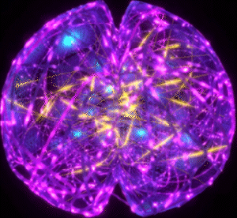

Your Company's Genius
All your
From all chat history in Slack, to all company content in Google Drive. Connect your company workspace apps and retrieve anything you need straight from your AI Colleague.

The AI Knowledge Base Revolution BETA begins in:
0:0:0:0
Watch our demo video
Revolutionizing workplace productivity

Difficulty Accessing Data
Finding the right information can be a challenge when it is stored across multiple apps and documents. OneBrain solves this by retrieving information from all connected apps, making it easy to access the data users need.

Inconsistent information:
When multiple people are answering questions, there can be inconsistencies in the responses. OneBrain provides a single source of truth, ensuring that everyone receives the same accurate information.

Slow Response Times
When employees have to wait for answers to their questions, it can lead to frustration and reduced productivity. OneBrain provides instant responses, reducing wait times and improving employee satisfaction.

Information Overload
As companies grow and generate more data, it becomes increasingly difficult to manage and access important information. OneBrain consolidates workspace apps and facilitates information retrieval with a simple question.
How it works
Step 1:
Easily authenticate your company’s workspace apps. Easily authenticate your company’s workspace apps. Anyone can login using their company email.

Step 2:
Begin chatting with your AI colleague. Employees has access to information from the original permissions you gave them in your workspace apps.